library(ggplot2)
library(dplyr)
library(tidyr)
library(gt)
library(tidyverse)
library(GGally)
library(infer)
library(ggcorrplot)
library(stringr)
library(Metrics)
library(lsr)
library(MASS)Projektabgabe: Diamonds
Datensatz: - ggplot2::diamonds Teammitglieder: - Julia Tuka - Clemens Hafenscher - Michael Maximilian Werfring
Train, Validation & Test Split
df <- ggplot2::diamonds
set.seed(123) # sorgt dafür, dass der Zufall immer der selbe ist, macht das script reproduzierbar.
n <- nrow(df)
idx <- sample(n) # daten durchmischen, falls diese nach einer Variale sortiert sind
train_indices <- idx[1:floor(0.6 * n)] # erste 60% des indizes
val_indices <- idx[(floor(0.6 * n) + 1):floor(0.8 * n)]
test_indices <- idx[(floor(0.8 * n) + 1):n]
train_set <- df[train_indices, ]
validation_set <- df[val_indices, ]
test_set <- df[test_indices, ]Deskriptive Statistik
NA-Einträge
colSums(is.na(train_set)) # im diamonds dataset sind keine NA-Einträge vorhanden...
train_set$carat[sample(1:nrow(train_set), 10)] <- NA # ...also setzen wir 10 Werte selbstständig auf NA
train_set$cut[sample(1:nrow(train_set), 10)] <- NA
train_set <- train_set |> filter(!is.na(price)) # für das spätere lineare Modell, wenn NA vorhanden, wird die Zeile nicht übernommen
# NAs behandeln, da wir nur carat und cut auf NA gesetzt haben, müssen nur diese behandelt werden
median_carat <- median(train_set$carat, na.rm = TRUE) # median aus der carat spalte berechnen ohne die na werte zu beachten
train_set$carat[is.na(train_set$carat)] <- median_carat # diesen median überall dort einsetzten wo wert = NA
mode_cut <- names(sort(table(train_set$cut), decreasing = TRUE))[1]
# table -> zählt häufigkeiten der vorkommenden Kategorien
# Sort -> sortiert das Array absteigend
# names [1] -> gibt den namen der ersten kategorie zurück
train_set$cut[is.na(train_set$cut)] <- mode_cut # modus von cut wird für die NA Werte eingesetzt- carat
- 0
- cut
- 0
- color
- 0
- clarity
- 0
- depth
- 0
- table
- 0
- price
- 0
- x
- 0
- y
- 0
- z
- 0
Ausreißer im Datensatz
ggplot(train_set, aes(x = price, y = "")) +
geom_boxplot() +
labs(title = "Boxplot: Preis", x = "Preis (USD)", y = NULL)
# viele Ausreiße durch hohe Preise vorhanden, werden beibehalten, da diese Preise in der realen Marktbeobachtung relevant sind, Diamanten sind ja Luxusartikel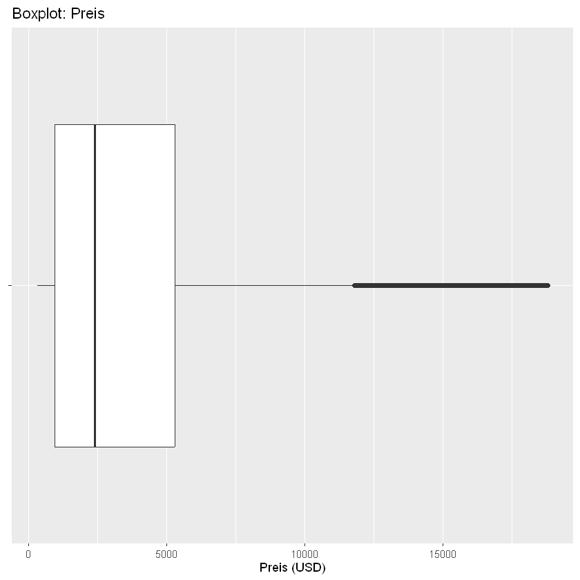
ggplot(train_set, aes(x = carat, y = "")) +
geom_boxplot() +
labs(title = "Boxplot: Carat", x = "Carat", y = NULL)
# Einige sehr große Diamanten vorhanden, meisten sind unter 1, Ausreißer berepresentieren die seleteneren/wertvolleren Diamanten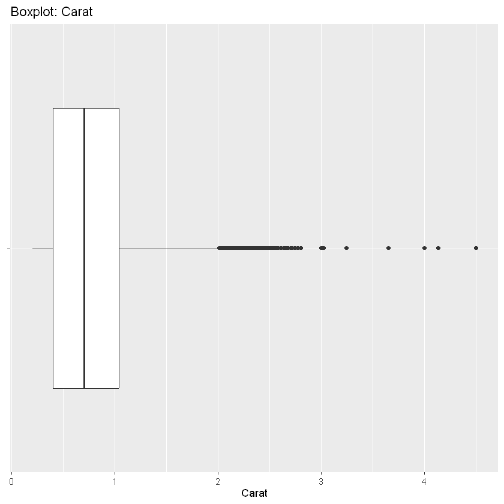
# par(mfrow = c(1,3))
# The next 3 plots created will be plotted next to each other
# boxplot(train_set$x, main = "x (Länge)", ylab = "mm")
# boxplot(train_set$y, main = "y (Breite)", ylab = "mm")
# boxplot(train_set$z, main = "z (Tiefe)", ylab = "mm")
# Put plotting arrangement back to its original state
# par(mfrow = c(1,1))
train_xyz_long <- train_set |>
select(x, y, z) |>
pivot_longer(cols = c(x, y, z), names_to = "dimension", values_to = "mm")
ggplot(train_xyz_long, aes(x = mm, y = dimension)) +
geom_boxplot() +
labs(title = "Boxplots: Abmessungen x/y/z", x = "mm", y = "Dimension")
# Einzelne sehr große Werte, einige 0 Werte, diese sind nicht realistisch -> sollten eventuell behandelt werden könnten Eingabe- oder Messfehler sein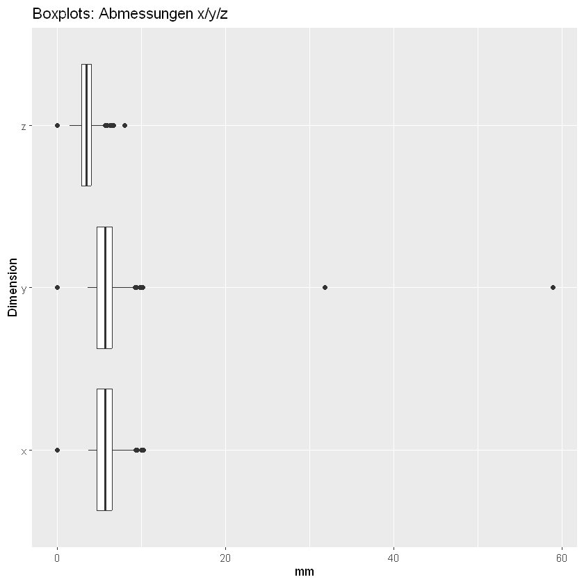
boxplot(train_set$depth, main = "Boxplot: Tiefe (%)", ylab = "Depth", horizontal = TRUE)
# moderate ausreißer mit plausiblen Werten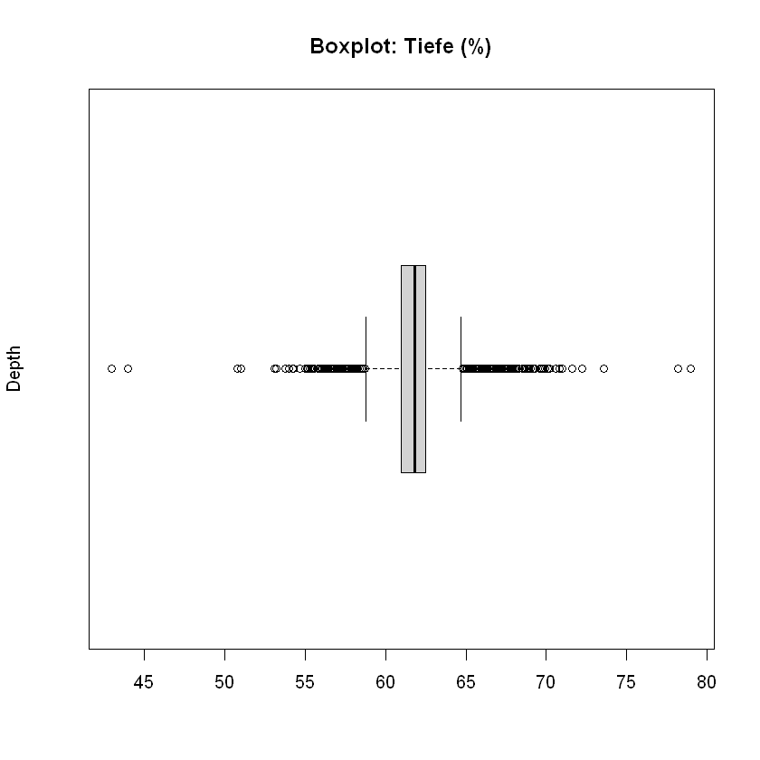
# Ausreißer behandeln: Die einzig wirklich auffälligen, die nicht plausibel erscheienn sind x, y, z Werte
# siehe =>
train_set |> filter(x == 0 | y == 0 | z == 0)
# Deher werden Beobachtungen mit 'unmöglichen' Abmessungen entfernt, da diese wahrscheinlich Messfehler oder Eingabefehler sind
train_set <- train_set |> filter(x > 0, y > 0, z > 0)| carat | cut | color | clarity | depth | table | price | x | y | z |
|---|---|---|---|---|---|---|---|---|---|
| <dbl> | <ord> | <ord> | <ord> | <dbl> | <dbl> | <int> | <dbl> | <dbl> | <dbl> |
| 1.01 | Premium | H | I1 | 58.1 | 59 | 3167 | 6.66 | 6.60 | 0 |
| 0.71 | Good | F | SI2 | 64.1 | 60 | 2130 | 0.00 | 0.00 | 0 |
| 1.00 | Very Good | H | VS2 | 63.3 | 53 | 5139 | 0.00 | 0.00 | 0 |
| 2.20 | Premium | H | SI1 | 61.2 | 59 | 17265 | 8.42 | 8.37 | 0 |
| 2.25 | Premium | H | SI2 | 62.8 | 59 | 18034 | 0.00 | 0.00 | 0 |
| 2.02 | Premium | H | VS2 | 62.7 | 53 | 18207 | 8.02 | 7.95 | 0 |
| 1.12 | Premium | G | I1 | 60.4 | 59 | 2383 | 6.71 | 6.67 | 0 |
| 0.71 | Good | F | SI2 | 64.1 | 60 | 2130 | 0.00 | 0.00 | 0 |
| 1.20 | Premium | D | VVS1 | 62.1 | 59 | 15686 | 0.00 | 0.00 | 0 |
| 1.56 | Ideal | G | VS2 | 62.2 | 54 | 12800 | 0.00 | 0.00 | 0 |
| 1.15 | Ideal | G | VS2 | 59.2 | 56 | 5564 | 6.88 | 6.83 | 0 |
| 2.80 | Good | G | SI2 | 63.8 | 58 | 18788 | 8.90 | 8.85 | 0 |
Visualisierungen
desc_table <- train_set |>
select(price, carat) |>
pivot_longer(
cols = everything(),
names_to = "Variable",
values_to = "Wert"
) |>
group_by(Variable) |>
summarise(
N = n(),
Min = min(Wert),
Q1 = quantile(Wert, 0.25),
Median = median(Wert),
Mean = mean(Wert),
Q3 = quantile(Wert, 0.75),
Max = max(Wert),
.groups = "drop"
)
desc_table| Variable | N | Min | Q1 | Median | Mean | Q3 | Max |
|---|---|---|---|---|---|---|---|
| <chr> | <int> | <dbl> | <dbl> | <dbl> | <dbl> | <dbl> | <dbl> |
| carat | 32352 | 0.2 | 0.4 | 0.7 | 0.7952028 | 1.04 | 4.5 |
| price | 32352 | 326.0 | 945.0 | 2395.0 | 3913.5963155 | 5292.00 | 18818.0 |
ggplot(train_set, aes(x = price)) +
geom_histogram(bins = 40, color = "black") +
coord_cartesian(xlim = c(0, 20000)) +
labs(title = "Histogramm des Diamantenpreises", x = "Preis", y = "Anzahl")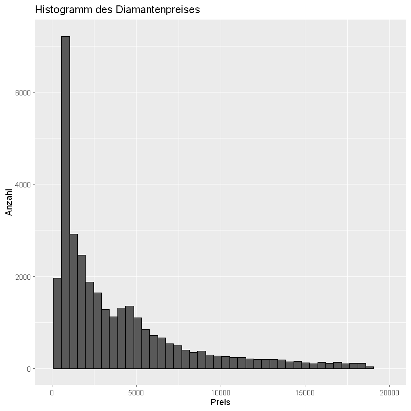
ggplot(train_set, aes(x = price)) +
geom_density(aes(y = after_stat(density * 100))) +
coord_cartesian(xlim = c(0, 20000)) +
labs(title = "Dichteplot des Diamantenpreises", x = "Preis", y = "Dichte (%)")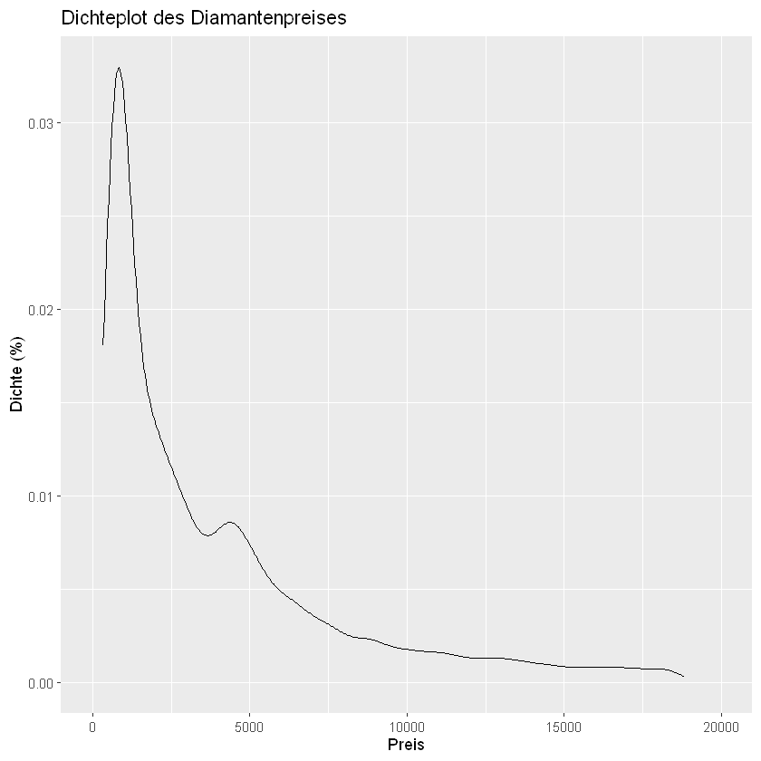
ggplot(train_set, aes(x = cut)) +
geom_bar(color = "black") +
labs(title = "Häufigkeit der Schliffqualität (cut)", x = "Cut", y = "Anzahl")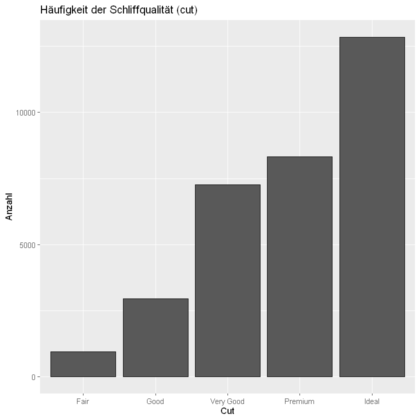
ggplot(train_set, aes(x = carat, y = price)) +
geom_point(alpha = 0.2) +
coord_cartesian(xlim = c(0, 5), ylim = c(0, 20000)) +
labs(title = "Preis in Abhängigkeit vom Karatgewicht", x = "Carat", y = "Preis (USD)")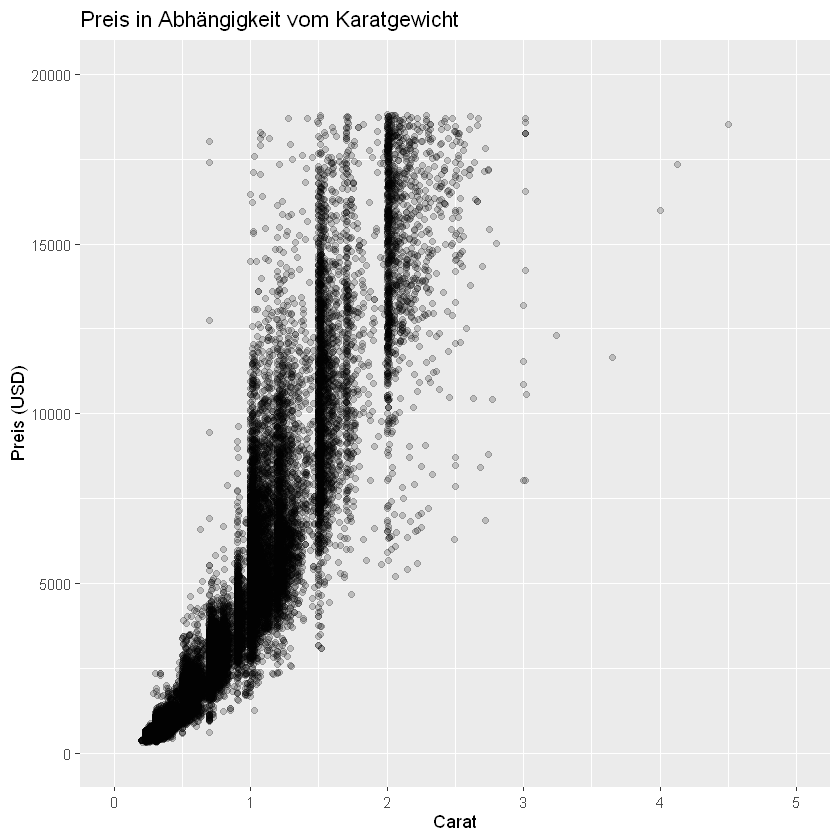
Induktive Statistik
df <- ggplot2::diamonds
df |> head()| carat | cut | color | clarity | depth | table | price | x | y | z |
|---|---|---|---|---|---|---|---|---|---|
| <dbl> | <ord> | <ord> | <ord> | <dbl> | <dbl> | <int> | <dbl> | <dbl> | <dbl> |
| 0.23 | Ideal | E | SI2 | 61.5 | 55 | 326 | 3.95 | 3.98 | 2.43 |
| 0.21 | Premium | E | SI1 | 59.8 | 61 | 326 | 3.89 | 3.84 | 2.31 |
| 0.23 | Good | E | VS1 | 56.9 | 65 | 327 | 4.05 | 4.07 | 2.31 |
| 0.29 | Premium | I | VS2 | 62.4 | 58 | 334 | 4.20 | 4.23 | 2.63 |
| 0.31 | Good | J | SI2 | 63.3 | 58 | 335 | 4.34 | 4.35 | 2.75 |
| 0.24 | Very Good | J | VVS2 | 62.8 | 57 | 336 | 3.94 | 3.96 | 2.48 |
Inference
For inference the variable depth was chosen. It describes the height of a diamond from the table (flat top surface) to the cutlet (tip at the bottom) and can be measured in millimeters. In this Dataset it is relative to the width of the diamond, so it must be interpreted as a percentage. See here for further information.
confidence_level = 0.95
q_lower = (1 - confidence_level) / 2
q_upper = q_lower + confidence_level
df |>
pull(depth) |>
quantile(c(q_lower, q_upper)) |>
print() # For better formattingTest for Normal Distribution
The histogram and the qq-plot show pretty clearly that a normal distribution is very unlikely to be present. First we will create functions to plot our data against normal distribution.
options(repr.plot.width = 10, repr.plot.height = 4) # make plot wider
plot_depth_agains_norm <- function(df) {
# scale standard-normal distribution with our data
m <- mean(df$depth)
s <- sd(df$depth)
norm_density <- function(x) dnorm(x,
mean = m,
sd = s
)
df |>
ggplot(aes(x = depth)) +
geom_histogram(aes(y = after_stat(density)), bins = 70,
fill = "#cccccc", color = "white", alpha = 0.85) +
geom_density(linewidth = 1.2, color = "#0073C2FF") +
geom_function(fun = norm_density,
linewidth = 1.2, color = "#006b3d", linetype = "dashed") +
theme_minimal(base_size = 14) +
labs(
title = "Diamond Depth Distribution vs. Normal Curve",
subtitle = paste0( # concats strings with no separator
"Blue line = Sample Distribution\nDashed Green = Normal Distribution (µ=", round(m, 1), ", σ=", round(s, 1), ")"),
x = "depth (%)",
y = "density",
) +
theme(
panel.grid.minor = element_blank(),
plot.title = element_text(face = "bold")
)
}
qq_plot_depth <- function(df) {
df |>
ggplot(aes(sample = depth)) +
stat_qq(color = "#0073C2FF") +
stat_qq_line(color="#006b3d", linewidth=1.5 , alpha=0.7) +
labs(title = "QQ-Plot depth",
x = "Quantiles Normaldistribution",
y = "Quantiles depth")
}plot_depth_agains_norm(df)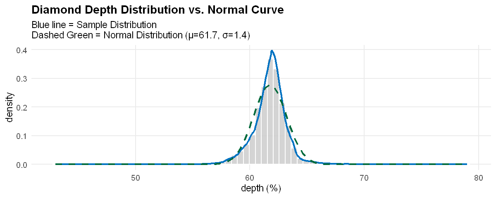
qq_plot_depth(df)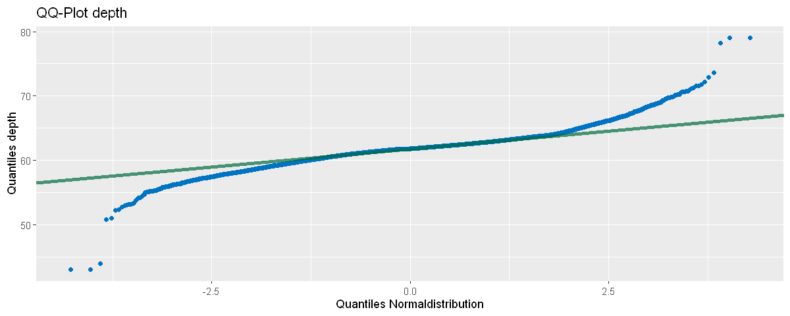
Lets try if removing the smallest and largest 1% of data would possibly improve the fit.
df_filtered <- df |>
filter(depth > quantile(depth, 0.01, na.rm = TRUE),
depth < quantile(depth, 0.99, na.rm = TRUE))
df_filtered |>
ggplot(aes(x = depth)) +
geom_histogram(bins = 70, fill = "#0073C2FF", color = "white") +
theme_minimal() +
labs(title = "Depth Distribution (Outliers Removed)",
subtitle = "Excluding the top 1% and bottom 1% from sample")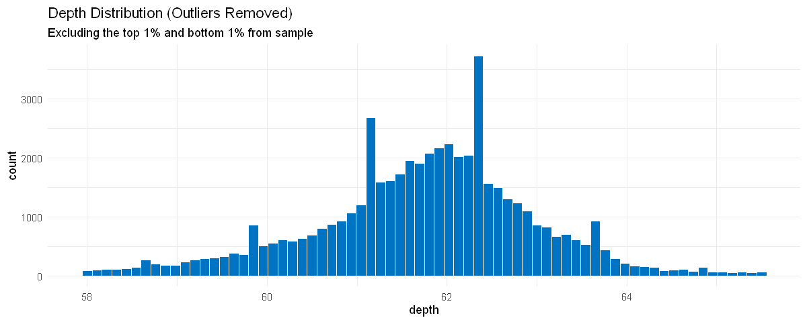
We see in the histogram, that both functions came closer to each other but the qq-plot still shows some discrepancies. As expected mu has not changed but sigma did.
plot_depth_agains_norm(df_filtered)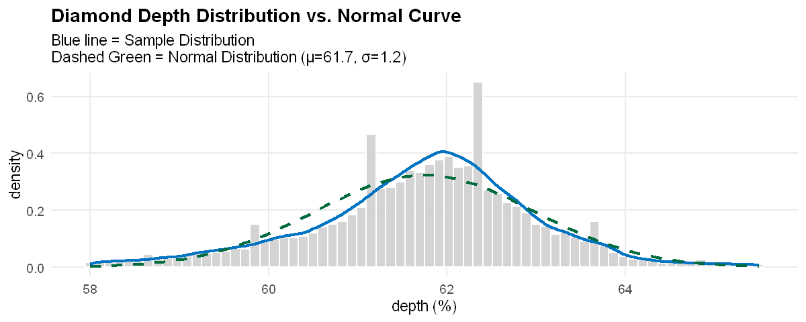
qq_plot_depth(df_filtered)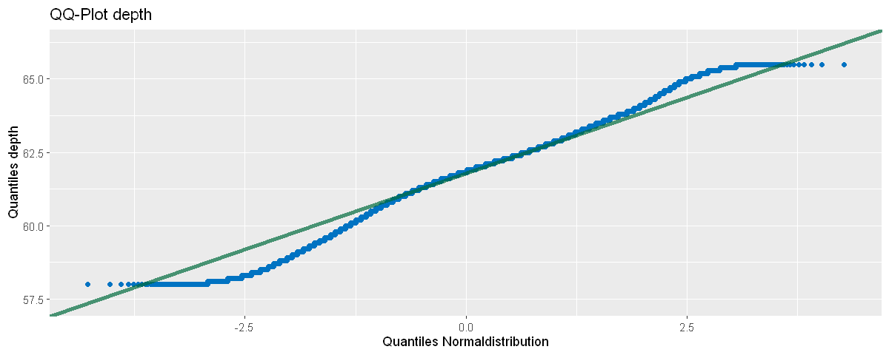
We can now test our df againts normal distribution to validate the assumptions from our plots. Lets assume that:
H0: “depth” follows normal distribution
H1: “depth” does not follow normal distribution
ks.test(
x=df$depth,
y="pnorm", # Test against normal distribution
mean=mean(df$depth),
sd=sd(df$depth),
alternative = "two.sided" # Standard value
)Warning message in ks.test.default(x = df$depth, y = "pnorm", mean = mean(df$depth), :
"ties should not be present for the one-sample Kolmogorov-Smirnov test"
Asymptotic one-sample Kolmogorov-Smirnov test
data: df$depth
D = 0.075871, p-value < 2.2e-16
alternative hypothesis: two-sidedWe can see from the Kolmogorov-Smirnov test, that the p-value is very small so we need to reject H0. Now lets test df_filtered for normal distribution to see if sacrificing 2% of our data was worth it. Again we state that: H0: “depth” follows normal distribution H1: “depth” does not follow normal distribution
ks.test(
x=df_filtered$depth, # now we use filtered data
y="pnorm", # Test against normal distribution
mean=mean(df$depth),
sd=sd(df$depth),
alternative = "two.sided" # Standard value
)Warning message in ks.test.default(x = df_filtered$depth, y = "pnorm", mean = mean(df$depth), :
"ties should not be present for the one-sample Kolmogorov-Smirnov test"
Asymptotic one-sample Kolmogorov-Smirnov test
data: df_filtered$depth
D = 0.080987, p-value < 2.2e-16
alternative hypothesis: two-sidedAgain p-value is really small so we have to reject H0. In conclusion it can be said, that there is very strong evidence, that our data (filtered and unfiltered) does not follow normal distribution.
Directed T-Test
Based on our extensive knowledge about diamonds we came to the conclusion that the depth of a diamond has some kind of influence on its cut. This means that a diamond with a “Fair” cut should be more shallow than a diamond with an “Ideal” cut according to this article.
We state our Hypothesis like this: H0: Mean depth of “Fair” cut diamonds is less than (or equal) to the mean depth of “Ideal” cut diamonds H1: Mean depth of “Fair” cut diamonds is greater than the mean depth of “Ideal” cut diamonds
df_fair_ideal <- df |> filter(cut == "Fair" | cut == "Ideal")
df_fair_ideal |> t_test(
formula = depth ~ cut, # compare depth, groups defined by cut
alternative = "greater", # also see H1
order = c("Fair", "Ideal"),
conf_level=0.95,
)| statistic | t_df | p_value | alternative | estimate | lower_ci | upper_ci |
|---|---|---|---|---|---|---|
| <dbl> | <dbl> | <dbl> | <chr> | <dbl> | <dbl> | <dbl> |
| 25.64795 | 1618.363 | 2.514919e-122 | greater | 2.332276 | 2.182617 | Inf |
Since the p-value is very small (basically zero) we can reject H0 and have strong evidence based on our data that the mean depth of “Fair” cut diamonds is grater than the mean depth of “Ideal” cut diamonds. Based on the conf_level of 95% and the lower_ci being at about 2.18% we can also state that we have 95% confidence that “Fair” cut diamonds are 2.18% deeper than “Ideal” cut diamonds.
Lineare Regression
Correlation
Below we create a correlation Matrix for all the numeric values from our train set. We see that there is strong positive correlation between the price, carat and the xyz values. While there is very little correlation between price and depth and table. Also the variables carat and x, y and z are positively correlated, which makes perfect sense due to the fact that carat is the weight of the diamond and x, y and z are length, width and depth of the diamond (in mm). Official Documentation
# Create correlation Matrix
train_corel <- train_set |>
select(where(is.numeric)) |>
cor() |>
round(digits = 2)
# Display correlation plot, easier to us than just correlation Matrix
ggcorrplot(train_corel, lab = TRUE)Creating Linear Models
Based on our insights from the previous sections we create 4 linear models with the following variables to predict a diamonds price:
- model1: carat, x, y, z (naive approach, just use all variables that have high correlate with price) - model2: carat, depth, table, x, y, z (use all numeric variables) - model3: carat, cut, color, clarity, depth, table, x, y, z (all variables available) - model4: carat, cut, color, clarity (based on this article these influence the quality and maybe also the price)
model1 <- lm(price ~ carat + x + y + z, data = train_set)
coef(model1) |>
print() # pretty formatting(Intercept) carat x y z
2985.0239 10897.2981 -159.3904 230.7853 -2303.9138 model2 <- lm(price ~ carat + depth + table + x + y + z, data = train_set)
coef(model2) |>
print()(Intercept) carat depth table x y
18969.91635 10983.88100 -165.48857 -102.07337 -1056.06250 82.73102
z
-603.43504 model3 <- lm(price ~ carat + cut + color + clarity + depth + table + x + y + z, data = train_set)
coef(model3) |>
print() (Intercept) carat cut.L cut.Q cut.C cut^4
733.233441 11506.988282 563.621509 -282.197593 128.756448 8.740099
color.L color.Q color.C color^4 color^5 color^6
-1919.476699 -645.965520 -168.955314 63.527826 -89.869021 -30.058165
clarity.L clarity.Q clarity.C clarity^4 clarity^5 clarity^6
4059.828875 -1909.338005 950.775288 -356.870283 236.162830 13.963781
clarity^7 depth table x y z
88.870568 26.384856 -27.932385 -233.850990 123.680190 -1671.695926
model4 <- lm(price ~ carat + cut + color + clarity, data = train_set)
coef(model4) |>
print() (Intercept) carat cut.L cut.Q cut.C cut^4
-3681.260768 8872.838336 684.630197 -313.066000 159.045941 15.857643
color.L color.Q color.C color^4 color^5 color^6
-1866.918332 -595.198208 -175.927479 45.284737 -77.251384 -33.356088
clarity.L clarity.Q clarity.C clarity^4 clarity^5 clarity^6
4185.343272 -1810.774959 888.682975 -352.603794 218.802968 7.636444
clarity^7
109.825386 # Ranking der wichtigsten Effekte (nach absolutem Betrag) -- keine Standardisierung
rank_betas <- function(model, top_n = NULL, remove_intercept = TRUE) {
df <- coef(model) |>
tibble::enframe(name = "term", value = "beta") |>
mutate(abs_beta = abs(beta))
# Bedingung außerhalb der Pipe anwenden
if (remove_intercept) {
df <- df |> filter(term != "(Intercept)")
}
df <- df |> arrange(desc(abs_beta))
if (!is.null(top_n)) {
df <- head(df, top_n)
}
return(df)
}Model Ranking
cat("\n====== MODEL 1: price ~ carat + x + y + z ======\n")
rank_m1 <- rank_betas(model1)
print(rank_m1, n = nrow(rank_m1))====== MODEL 1: price ~ carat + x + y + z ====== # A tibble: 4 × 3 term beta abs_beta <chr> <dbl> <dbl> 1 carat 10897. 10897. 2 z -2304. 2304. 3 y 231. 231. 4 x -159. 159.
cat("\n====== MODEL 2: price ~ carat + depth + table + x + y + z ======\n")
rank_m2 <- rank_betas(model2)
print(rank_m2, n = nrow(rank_m2))====== MODEL 2: price ~ carat + depth + table + x + y + z ====== # A tibble: 6 × 3 term beta abs_beta <chr> <dbl> <dbl> 1 carat 10984. 10984. 2 x -1056. 1056. 3 z -603. 603. 4 depth -165. 165. 5 table -102. 102. 6 y 82.7 82.7
cat("\n====== MODEL 3: price ~ carat + cut + color + clarity + depth + table + x + y + z ======\n")
rank_m3 <- rank_betas(model3)
print(rank_m3, n = 20) # viele Terme durch Faktoren====== MODEL 3: price ~ carat + cut + color + clarity + depth + table + x + y + z ====== # A tibble: 23 × 3 term beta abs_beta <chr> <dbl> <dbl> 1 carat 11507. 11507. 2 clarity.L 4060. 4060. 3 color.L -1919. 1919. 4 clarity.Q -1909. 1909. 5 z -1672. 1672. 6 clarity.C 951. 951. 7 color.Q -646. 646. 8 cut.L 564. 564. 9 clarity^4 -357. 357. 10 cut.Q -282. 282. 11 clarity^5 236. 236. 12 x -234. 234. 13 color.C -169. 169. 14 cut.C 129. 129. 15 y 124. 124. 16 color^5 -89.9 89.9 17 clarity^7 88.9 88.9 18 color^4 63.5 63.5 19 color^6 -30.1 30.1 20 table -27.9 27.9 # ℹ 3 more rows
cat("\n====== MODEL 4: price ~ carat + cut + color + clarity ======\n")
rank_m4 <- rank_betas(model4)
print(rank_m4, n = 20)====== MODEL 4: price ~ carat + cut + color + clarity ====== # A tibble: 18 × 3 term beta abs_beta <chr> <dbl> <dbl> 1 carat 8873. 8873. 2 clarity.L 4185. 4185. 3 color.L -1867. 1867. 4 clarity.Q -1811. 1811. 5 clarity.C 889. 889. 6 cut.L 685. 685. 7 color.Q -595. 595. 8 clarity^4 -353. 353. 9 cut.Q -313. 313. 10 clarity^5 219. 219. 11 color.C -176. 176. 12 cut.C 159. 159. 13 clarity^7 110. 110. 14 color^5 -77.3 77.3 15 color^4 45.3 45.3 16 color^6 -33.4 33.4 17 cut^4 15.9 15.9 18 clarity^6 7.64 7.64
model_stats <- function(model) {
s <- summary(model)
list(
t_tests = s$coefficients, # T-Tests der Regressionskoeffizienten
f_test = s$fstatistic, # F-Test des Gesamtmodells
r2 = s$r.squared, # R²
adj_r2 = s$adj.r.squared, # Adjusted R²
aic = AIC(model) # AIC
)
}
stats_m1 <- model_stats(model1)
stats_m2 <- model_stats(model2)
stats_m3 <- model_stats(model3)
stats_m4 <- model_stats(model4)Modelle Übersicht
cat("===== MODEL 1: price ~ carat + x + y + z =====\n")
print(stats_m1$t_tests)
cat("\nF-Test:\n")
print(stats_m1$f_test)
cat("\nR²:", stats_m1$r2, "| adj. R²:", stats_m1$adj_r2, "\n")
cat("AIC:", stats_m1$aic, "\n\n")===== MODEL 1: price ~ carat + x + y + z =====
Estimate Std. Error t value Pr(>|t|)
(Intercept) 2985.0239 144.70666 20.628104 6.188344e-94
carat 10897.2981 87.42329 124.649835 0.000000e+00
x -159.3904 61.35110 -2.598004 9.380984e-03
y 230.7853 26.64268 8.662240 4.836798e-18
z -2303.9138 96.83812 -23.791393 4.781897e-124
F-Test:
value numdf dendf
48470.75 4.00 32347.00
R²: 0.8570172 | adj. R²: 0.8569995
AIC: 565258.5
cat("===== MODEL 2: price ~ carat + depth + table + x + y + z =====\n")
print(stats_m2$t_tests)
cat("\nF-Test:\n")
print(stats_m2$f_test)
cat("\nR²:", stats_m2$r2, "| adj. R²:", stats_m2$adj_r2, "\n")
cat("AIC:", stats_m2$aic, "\n\n")===== MODEL 2: price ~ carat + depth + table + x + y + z =====
Estimate Std. Error t value Pr(>|t|)
(Intercept) 18969.91635 1067.222757 17.775030 2.386481e-70
carat 10983.88100 86.490134 126.995768 0.000000e+00
depth -165.48857 16.577788 -9.982548 1.965059e-23
table -102.07337 3.929776 -25.974346 3.134854e-147
x -1056.06250 147.650368 -7.152454 8.704805e-13
y 82.73102 31.996938 2.585592 9.725528e-03
z -603.43504 265.570568 -2.272221 2.307970e-02
F-Test:
value numdf dendf
33183.98 6.00 32345.00
R²: 0.8602499 | adj. R²: 0.860224
AIC: 564522.6
cat("===== MODEL 3: price ~ carat + cut + color + clarity + depth + table + x + y + z =====\n")
print(stats_m3$t_tests)
cat("\nF-Test:\n")
print(stats_m3$f_test)
cat("\nR²:", stats_m3$r2, "| adj. R²:", stats_m3$adj_r2, "\n")
cat("AIC:", stats_m3$aic, "\n\n")===== MODEL 3: price ~ carat + cut + color + clarity + depth + table + x + y + z =====
Estimate Std. Error t value Pr(>|t|)
(Intercept) 733.233441 865.72393 0.8469599 3.970238e-01
carat 11506.988282 67.08425 171.5303921 0.000000e+00
cut.L 563.621509 29.17011 19.3218842 1.030497e-82
cut.Q -282.197593 23.32193 -12.1000948 1.247282e-33
cut.C 128.756448 20.07481 6.4138322 1.438646e-10
cut^4 8.740099 16.04369 0.5447685 5.859165e-01
color.L -1919.476699 22.36050 -85.8423094 0.000000e+00
color.Q -645.965520 20.36636 -31.7172795 1.948690e-217
color.C -168.955314 19.03331 -8.8768240 7.226225e-19
color^4 63.527826 17.51511 3.6270292 2.871418e-04
color^5 -89.869021 16.54150 -5.4329432 5.583169e-08
color^6 -30.058165 15.01336 -2.0020940 4.528296e-02
clarity.L 4059.828875 39.78496 102.0443196 0.000000e+00
clarity.Q -1909.338005 37.22085 -51.2975459 0.000000e+00
clarity.C 950.775288 31.77767 29.9196010 4.871691e-194
clarity^4 -356.870283 25.22880 -14.1453518 2.724116e-45
clarity^5 236.162830 20.47981 11.5314944 1.051301e-30
clarity^6 13.963781 17.76784 0.7859021 4.319306e-01
clarity^7 88.870568 15.64585 5.6801360 1.357416e-08
depth 26.384856 12.92447 2.0414656 4.121267e-02
table -27.932385 3.73007 -7.4884339 7.147542e-14
x -233.850990 113.90138 -2.0531006 4.007085e-02
y 123.680190 24.34151 5.0810410 3.774592e-07
z -1671.695926 204.24006 -8.1849562 2.822999e-16
F-Test:
value numdf dendf
16025.36 23.00 32328.00
R²: 0.9193637 | adj. R²: 0.9193063
AIC: 546766.1
cat("===== MODEL 4: price ~ carat + cut + color + clarity =====\n")
print(stats_m4$t_tests)
cat("\nF-Test:\n")
print(stats_m4$f_test)
cat("\nR²:", stats_m4$r2, "| adj. R²:", stats_m4$adj_r2, "\n")
cat("AIC:", stats_m4$aic, "\n\n")===== MODEL 4: price ~ carat + cut + color + clarity =====
Estimate Std. Error t value Pr(>|t|)
(Intercept) -3681.260768 18.14629 -202.8658079 0.000000e+00
carat 8872.838336 15.58298 569.3929250 0.000000e+00
cut.L 684.630197 26.47861 25.8559705 6.366332e-146
cut.Q -313.066000 23.31054 -13.4302316 5.181292e-41
cut.C 159.045941 20.15874 7.8896779 3.124677e-15
cut^4 15.857643 16.11222 0.9841998 3.250247e-01
color.L -1866.918332 22.87299 -81.6210937 0.000000e+00
color.Q -595.198208 20.84346 -28.5556318 3.801549e-177
color.C -175.927479 19.51473 -9.0151129 2.072136e-19
color^4 45.284737 17.95260 2.5224616 1.165843e-02
color^5 -77.251384 16.96143 -4.5545335 5.269345e-06
color^6 -33.356088 15.39649 -2.1664737 3.028229e-02
clarity.L 4185.343272 40.59732 103.0940677 0.000000e+00
clarity.Q -1810.774959 38.08909 -47.5405142 0.000000e+00
clarity.C 888.682975 32.54087 27.3097496 2.271714e-162
clarity^4 -352.603794 25.87413 -13.6276588 3.587074e-42
clarity^5 218.802968 20.99081 10.4237486 2.119606e-25
clarity^6 7.636444 18.22090 0.4191036 6.751432e-01
clarity^7 109.825386 16.03671 6.8483751 7.602808e-12
F-Test:
value numdf dendf
19377.21 18.00 32333.00
R²: 0.9151638 | adj. R²: 0.9151166
AIC: 548398.7
RMSE
## RMSE
rmse_model <- function(model, train_data, val_data) {
pred_train <- predict(model, train_data)
pred_val <- predict(model, val_data)
rmse_train <- rmse(train_data$price, pred_train)
rmse_val <- rmse(val_data$price, pred_val)
return(list(train_rmse = rmse_train, val_rmse = rmse_val))
}
rmse_m1 <- rmse_model(model1, train_set, validation_set)
rmse_m2 <- rmse_model(model2, train_set, validation_set)
rmse_m3 <- rmse_model(model3, train_set, validation_set)
rmse_m4 <- rmse_model(model4, train_set, validation_set)
cat("===== MODEL 1 =====\n")
print(rmse_m1)
cat("\n===== MODEL 2 =====\n")
print(rmse_m2)
cat("\n===== MODEL 3 =====\n")
print(rmse_m3)
cat("\n===== MODEL 4 =====\n")
print(rmse_m4)===== MODEL 1 =====
$train_rmse
[1] 1505.595
$val_rmse
[1] 1518.872
===== MODEL 2 =====
$train_rmse
[1] 1488.477
$val_rmse
[1] 1489.194
===== MODEL 3 =====
$train_rmse
[1] 1130.658
$val_rmse
[1] 1130.535
===== MODEL 4 =====
$train_rmse
[1] 1159.729
$val_rmse
[1] 1146.878
Model 3 is has the best RMSE Score, followed closely by Model 4, for the next plots we will use the best Model (3).
res <- residuals(model3)
fitted_vals <- fitted(model3)
# Residuen vs. Fitted Plot (Homoskedastizität)
plot(fitted_vals, res,
main = "Residuals vs Fitted",
xlab = "Fitted Values",
ylab = "Residuals",
pch = 20, col = rgb(0,0,0,0.3))
abline(h = 0, col = "red", lwd = 2)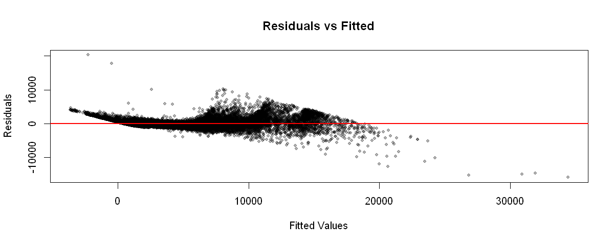
qqnorm(res, main = "QQ-Plot der Residuen", pch = 20, col = rgb(0,0,0,0.3))
qqline(res, col = "red", lwd = 2)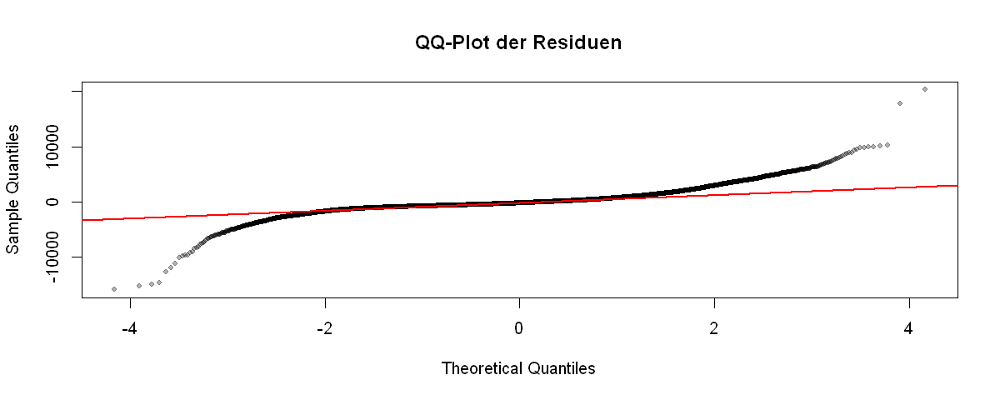
hist(res, breaks = 50,
main = "Histogramm der Residuen",
xlab = "Residuen",
col = "lightblue", border = "white")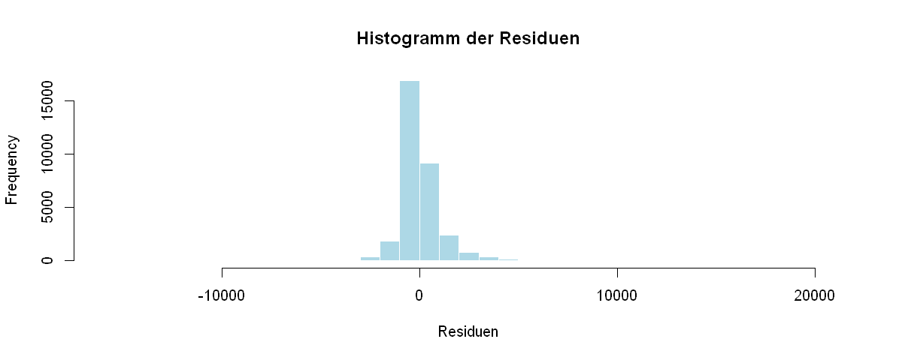
std_res <- studres(model3)
plot(std_res,
main = "Standardisierte Residuen",
ylab = "Standardisierte Residuen",
xlab = "Index",
pch = 20, col = rgb(0,0,0,0.3))
abline(h = c(-3, 3), col = "red", lwd = 2)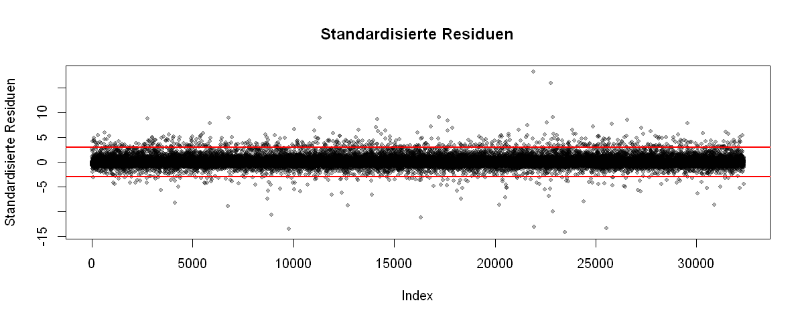
Prognose am Test-Set
# ---- Prognose für das Test-Set ----
pred_test <- predict(model3, test_set)
# ---- RMSE berechnen ----
rmse_test <- rmse(test_set$price, pred_test)
cat("RMSE Test-Set (Modell 3):", rmse_test, "\n")
rmse_test_all <- function(model, name) {
pred <- predict(model, test_set)
val <- rmse(test_set$price, pred)
cat(name, ": ", val, "\n")
}
rmse_test_all(model1, "Model 1")
rmse_test_all(model2, "Model 2")
rmse_test_all(model3, "Model 3")
rmse_test_all(model4, "Model 4")RMSE Test-Set (Modell 3): 1258.175
Model 1 : 1704.629
Model 2 : 1559.429
Model 3 : 1258.175
Model 4 : 1180.247 Hier zeigt sich, dass Modell 4 im Gegensatz zu vorher auf den Testdaten besser abschneidet als Modell 3. Das könnte daran liegen, dass Modell 3 mehr Variablen beinhaltet und somit overfittet.